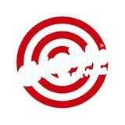
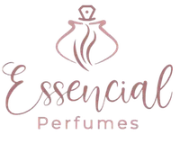
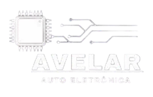
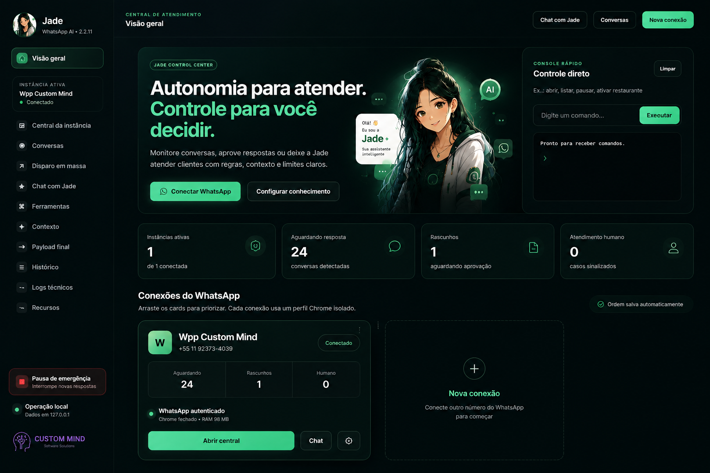
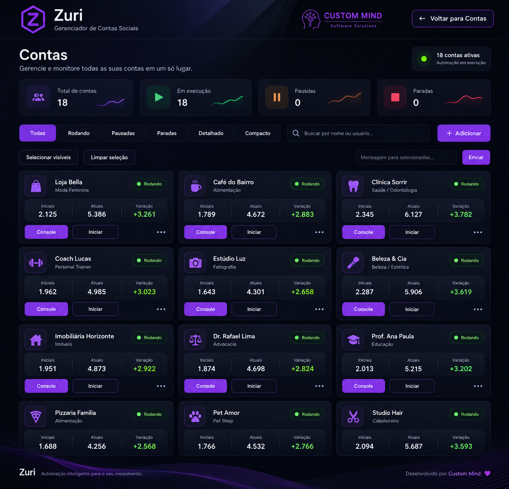
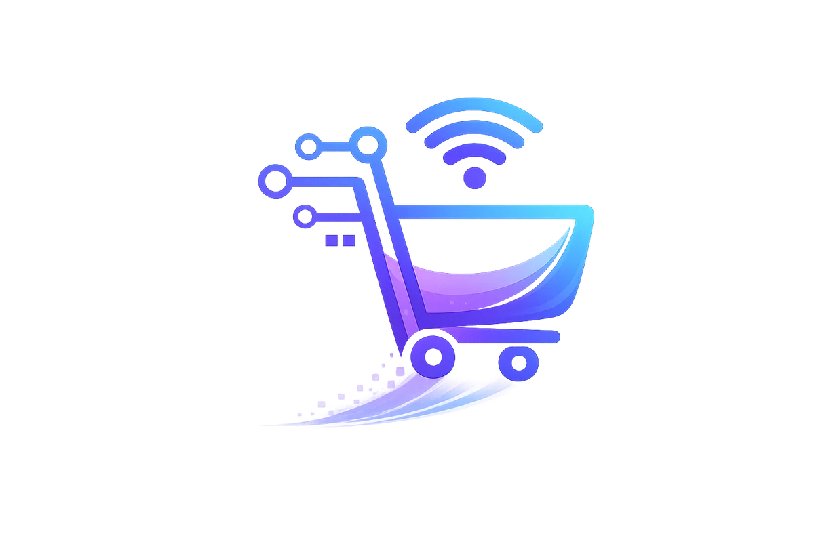

Custom Mind · Software Solutions
Ideias grandes.
Execução de verdade.
Criamos sites, softwares, automações e soluções com inteligência artificial para transformar necessidades reais em negócios mais inteligentes.
De Passos, Minas Gerais, para todo o Brasil.
O que acreditamos
A melhor tecnologia é aquela que faz sentido para você.
Seu negócio tem seu próprio ritmo, desafios e ambições. Por isso, não começamos com um pacote pronto: entendemos o cenário e desenhamos a solução certa, do primeiro site ao sistema que conecta uma operação inteira.
Marcas e negócios que fazem parte da nossa história.



Onde atuamos
Quatro formas de fazer acontecer.
Entramos na etapa em que o seu negócio está — e conectamos as peças quando é hora de crescer.
Projetos reais
Um bom projeto não parece com nenhum outro.
Tecnologia da casa
Ideias que viraram produtos.
Além dos projetos sob medida, desenvolvemos soluções próprias para desafios recorrentes de negócios.

Jade ↗
Conversas mais organizadas no WhatsApp, com contexto e apoio para sua equipe.

Zuri ↗
Fluxos de descoberta, execução e acompanhamento para Instagram.

Loja Inteligente ↗
Vendas, estoque, financeiro e regras do negócio em um fluxo integrado.
Nosso processo
Primeiro entendemos.
Depois construímos.
Sem soluções empurradas, escopos inflados ou tecnologia escolhida antes de conhecer o problema.
Conheça a Custom Mind- Descobrir o desafioEntendemos seu negócio, os obstáculos e o resultado que precisa alcançar.
- Definir o caminhoPriorizamos o que gera valor e desenhamos uma primeira entrega viável.
- Construir e evoluirImplementamos, testamos e melhoramos a solução com clareza em cada etapa.
Dúvidas frequentes
Antes de começar.
O tamanho do projeto não precisa ser um obstáculo para a primeira conversa.
O que a Custom Mind faz hoje?
Atuamos em quatro pilares: presença digital, software sob medida, automação e inteligência artificial. Jade, Zuri e Loja Inteligente são produtos desenvolvidos pela Custom Mind dentro desse ecossistema.
O que vocês chamam de presença digital?
É a estrutura que faz uma empresa ser encontrada, compreendida e contatada: site, Google, SEO, busca, dados estruturados, mensuração e integrações de entrada.
A Custom Mind trabalha apenas com projetos grandes e complexos?
Não. Também desenvolvemos projetos menores quando existe uma necessidade clara a resolver, como sites, landing pages, automações pontuais, integrações, MVPs e ferramentas internas.
Tenho apenas uma ideia ou uma necessidade pequena. Posso falar com a Custom Mind?
Sim. Nem todo projeto precisa começar como um sistema completo. Podemos avaliar a necessidade, definir um primeiro escopo e evoluir a solução conforme fizer sentido.
Vocês criam sites preparados para o Google?
Sim. Estruturamos conteúdo, metadados, links internos, dados estruturados, sitemap e fundamentos técnicos para mecanismos de busca.
É possível integrar WhatsApp, Instagram e outros sistemas?
Sim, quando as plataformas oferecem uma forma segura de integração. O fluxo é analisado antes de definir o escopo.
Como funciona um projeto sob medida?
Começamos pelo gargalo mais importante, desenhamos uma primeira entrega e evoluímos a solução em etapas validadas.
Vocês atendem empresas fora de Passos?
Sim. A Custom Mind está em Passos, Minas Gerais, e atende projetos remotamente em todo o Brasil.
Seu próximo projeto começa com uma conversa.